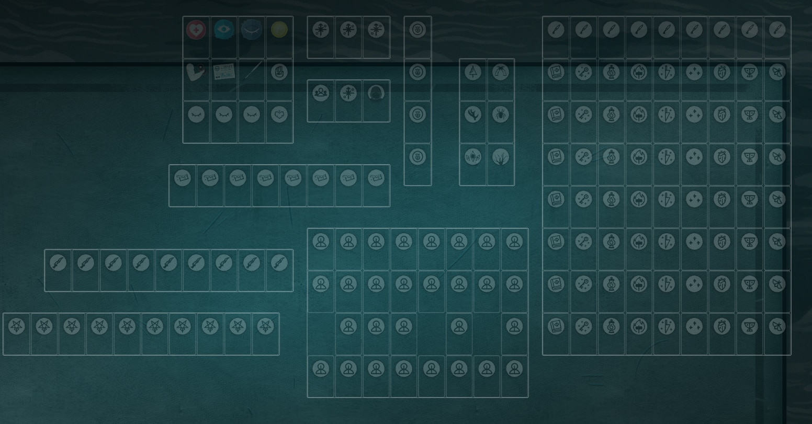
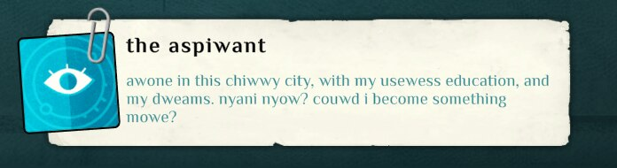

Cultist Simulator Mods
Modlist
Major Mods
- The Wheel: A modern time control mod for Cultist Simulator. Adjust the fast-forward speed between 0.2x and 32x, skip forward in time with keybinds, play the game entirely paused with skip-to-event keys, and more.
- Hawthorn: A Shelf mod for Cultist Simulator, aimed at adding compatibility with Shelves and most major content mods. Also includes a set of opinionated vanilla shelves, as well as requests from the community.
- A Tewwibwe Cuwse: A Cultist Simulator mod that runs an uwu text transformer on all in-game text, including mods. Not for the faint of heart.
Minor Mods
These mods are all stored at my Collected Cultist Simulator Mods repository, as is general modding information.
- Secret Histories Ink: Adds a Secret Histories pigment, so you can paint the Teresa and Christopher painting without console.
- Looping Recruitment: Simple mod to let you automatically search for acquaintances and patrons until the decks are empty. Start looping by putting 2 lore fragments in the talk verb, and if you need to stop put a health into the slot.
- Improved Skintwisters: Makes Skintwisters have a 90% chance to destroy evidence, the same as every other Exalt's success chance at their job, instead of 70%, the same as a disciple. Made to replace an old mod that was less balanced.
- Looping Mansus: Loop your trips to the mansus. Inspired by the Looping Job mod. The Peacock's Door can only be looped with the Frangiclave, since it breaks mirrors, and the Spider's Door cannot be looped at all, as it consumes its offerings.
- On Matthias and the Amethyst Imago: Loss: Adds a loss sigil to the cover of the book, On Matthias and the Amethyst Imago: Loss. Joke mod.
A Brief Mod History
Back in July 2022, I completed a small mobile card game called Underhand. It's still available on the Play Store, and was apparently a college project for a trio of developers. I loved it, and searched to see if the developers had done anything else; I found a published email from the developers stating that they weren't working together anymore, but anyone who wanted more Underhand should look into the game that inspired it, 'Cultist Simulator'. I downloaded it and immediately was fascinated by the deceptively deep lore hiding inside what was technically a game about moving cards around on a tabletop.
It wasn't long before I discovered the game had modding support, and started tinkering with the game files. After scrapping several ideas that never went anywhere, I published my first mod, "Looping Mansus", which just let you automate a certain part of the game that gets repetitive quickly.
A few months later, another modder published a mod that allowed you to define custom board layouts and auto-snap cards to these "shelves", using a surprisingly complex "expression" system (which is technically part of another mod, The Roost Machine). This made it much easier for me to play the game, and I quickly set up a generator to make custom shelf layouts reasonably easily, and published a mod with my own layouts. Apparently, my layouts were sensible, since the mod (at the time simply titled "Kat's Shelves") was fairly popular- although the fact that it was one of the first mods of its kind almost certainly helped.
 Look at all the pretty icons. They took forever to make.My first foray into "dll modding" (Cultsim allows both content-only json mods and C# patch mods using Harmony) came when one of the mods I'd been using, "Adjustable Fast Forward" (which does exactly what it says) broke. The author didn't seem intent on maintaining it (and to this day, it has not been fixed) so I decided I'd just make my own. Within a few hours, I had a mod that did exactly what the original did, but after publishing it I received several feature requests from community members and had more ideas of my own, and it grew to become a must-have time-control mod with many features. Today, The Wheel has 1407 total unique subscribers on the Steam Workshop (and is also available on github, for non-steam players)
After seeing the relative ease with which The Wheel was born, I decided to make an ambitious joke mod. I'd previously made a script to run the game's content through an uwu text transformer, but that was inefficient and required pregeneration. After a bit of tinkering, A Tewwibwe Cuwse 2.0 was born, a dll mod that intercepts the game's content loading process to run the transformer on all text- including mods. Notably, this includes the in-game patch notes, credits, and title screen, which has led to some entertaining results.
 A tewwibwe cuwse has befallen this game. Pwepawe youwsewf. Glowing reviews from my fellow modders who've seen their mods
uwuified
Glowing reviews from my fellow modders who've seen their mods
uwuified
As I played more and more content mods, I realized that it was becoming a pain to play these mods without the shelves I'd come to rely on, and decided it was time for a revamp of my shelves mod. I added new shelves for all the DLC and content mods I'd played, and made greater use of complex expressions to make shelves that pushed the limits of the system (sometimes literally- back then the Shelves mod wasn't very well-optimized, so autosorting would cause stutter if there were too many complex expressions). I also rebranded it, in the long tradition of naming mods after lore concepts, to Hawthorn. Nowadays, Hawthorn includes shelves for 9 major content mods, as well as all DLCs, vanilla layouts, and compatibility with minor mods.